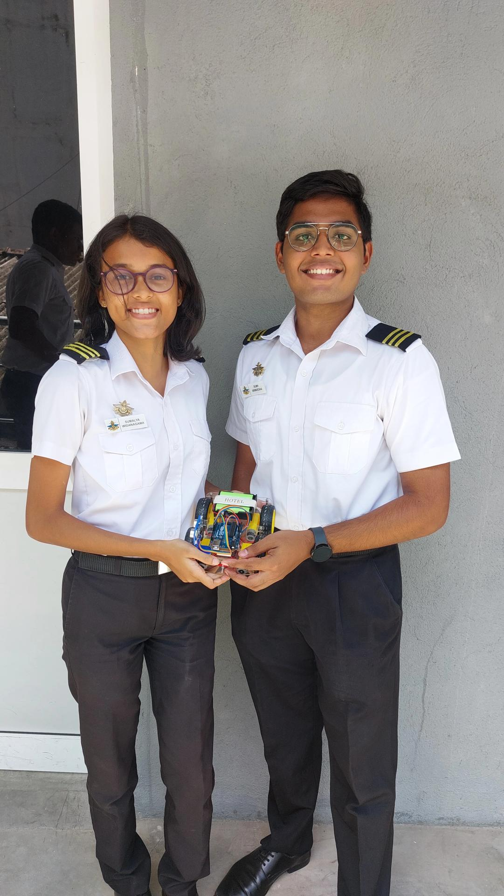

Wall Following Robot Car
An autonomous wall-following robot maintaining consistent distance from walls using real-time ultrasonic sensor feedback — designed and built for a competitive robotics event held within university premises.


Project Overview
This competition-ready autonomous robot was designed and built for a robotics event at KDU requiring autonomous navigation through maze-like environments. Using only ultrasonic sensors and embedded control algorithms, the robot successfully navigates complex courses by maintaining a consistent distance from walls while detecting and avoiding obstacles.
This project demonstrates the integration of embedded systems, sensor technology, and intelligent control algorithms — specifically PID control and a finite state machine architecture. Built entirely in C++ on Arduino Uno, the system achieves ±1cm wall distance accuracy at up to 0.5m/s.
Technologies Used
Key Components & Features
Arduino Uno Microcontroller
Main control unit running the navigation algorithm and processing sensor data for real-time decision-making and autonomous operation at competition speed.
HC-SR04 Ultrasonic Sensors
Strategically positioned for comprehensive environmental coverage with ±1cm accuracy ensure reliable wall tracking.
L298N Motor Driver
Powers and controls DC motors with precise speed modulation via PWM signals, allowing smooth directional changes and optimal navigation performance.
DC Stepper Motors
Reliable locomotion with sufficient torque for smooth movement on a two-wheel differential drive chassis with front castor wheel at up to 0.5m/s.
Chassis & Wheel Assembly
Robust mechanical platform optimised for stability and maneuverability in competition environments across various surface conditions and tight corners.
Power Management System
Power architecture with stable voltage regulation ensuring consistent performance throughout 15-minute competition runs with reliable operation for all components.
Key Metrics
Technical Implementation
PID Control Algorithm
The Arduino Uno runs a PID controller that continuously processes ultrasonic sensor data to maintain a target wall distance of 15cm. Proportional, integral, and derivative gains were systematically tuned through iterative testing to achieve smooth, stable operation without oscillation.
Finite State Machine Navigation
A state machine architecture organises robot behaviour across four states: Wall Following, Corner Detection, Obstacle Avoidance, and Recovery. This structured approach ensures predictable behaviour transitions and robust handling of edge cases encountered in competition environments.
Sensor Fusion & Filtering
HC-SR04 sensor provide comprehensive coverage. Outlier rejection discards anomalous distance values.
Corner Handling
A multi-phase turn algorithm includes gradual deceleration approaching corners, a precise pivot using differential drive, and controlled acceleration out of turns — with inertial compensation derived from systematic characterisation testing on the competition surface.
Key Learnings & Development
- Embedded Programming: Efficient real-time control algorithms and sensor data processing using C++ on Arduino with strict loop timing constraints
- Sensor Technology: Precise ultrasonic distance measurement, environmental sensing, noise characterisation, and multi-sensor fusion strategies
- Motor Control: Smooth speed regulation and directional control using PWM with differential drive for optimal turning performance
- Autonomous Systems: State machine design patterns and systematic debugging methodology for independent operation
- Competition Strategy: Importance of fail-safe behaviours, handling edge cases, and iterative development from simple baselines to complex full systems
The completed robot successfully navigates along walls with consistent distance maintenance, demonstrating advanced skills in autonomous robotics and embedded systems design. These foundational skills established a strong base for more advanced projects involving computer vision, machine learning, and complex autonomous systems.